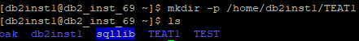

执行备份之前，数据库需要开启归档模式，执行差异备份与增量备份之前，数据库需要开启增量模式。
开启增量模式
- 使用PuTTY，登录DB2数据库主机。
- 执行以下命令切换至DB2数据库用户，以用户名db2inst1为例。
su - db2inst1
- 在集群所有节点执行以下命令开启增量模式，test是用户自定义数据库名称。
db2 update db cfg for test using trackmod on
开启归档模式
- 使用PuTTY，登录DB2数据库主机。
- 执行以下命令切换至DB2数据库用户，以用户名db2inst1为例。
su - db2inst1
- 执行以下命令进入并查询数据库用户目录。
cd pwd
回显如下所示，“/home/db2inst1”为数据库用户目录。
- 在数据库用户目录下创建数据库同名文件夹路径，用于存放归档日志，以“/home/db2inst1/TEST”路径为例。
mkdir -p /home/db2inst1/TEST
在数据库用户目录下，执行ls查询文件夹路径是否创建成功，其回显如下所示：

- 执行以下命令开启归档模式，test是用户自定义数据库名称。
db2 update db cfg for test using LOGARCHMETH1 disk:/home/db2inst1/TEST
- 在数据库用户目录下创建数据库同名文件夹路径，用于离线备份路径，以“/home/db2inst1/TEAT1”路径为例。
mkdir -p /home/db2inst1/TEAT1
在数据库用户目录下，执行ls查询文件夹路径是否创建成功，其回显如下所示：

- 执行以下命令开启离线备份，test是用户自定义数据库名称。
db2 backup db test on all nodes to /home/db2inst1/TEAT1